Arquitetura e Medicina Tradicional Chinesa
Diferentes áreas, um mesmo objetivo: criar um ambiente saudável, proporcionando acolhimento e bem estar à condição de saúde física ou emocional delibitada.
Olá! Quem sou eu?
Eu sou a Indira.
Atuo na área de arquitetura de interiores desde 2010, com foco em arquitetura residencial, e sempre me encantei pela relação entre a casa e o ser humano.
E foi no ano de 2018 que me aproximei ainda mais deste tema. Após passar por um tratamento intensivo de saúde, pude sentir os benefícios deste universo. Posteriormente, meus caminhos me levaram à Medicina Tradicional Chinesa e o Feng Shui. E, neste encontro, visualizei um método de integração dessas áreas com a arquitetura. Assim nasceu o Casa e Saúde.
Seja por meio de terapias complementares, Reiki, Aromaterapia e, até mesmo, a influência do Ioga, esses pequenos detalhes do dia a dia podem contribuir diante de um quadro clínico, que pode ser físico ou emocional. E todos eles quando associados à arquitetura, contribuem para promover o bem-estar em sua casa.
Já parou para pensar no quanto o bem-estar da sua casa interfere na sua saúde?
Sejam bem-vindos ao Casa e Saúde
Arquitetura
Por meio de um atendimento individual e personalizado, trago o acolhimento e conforto ao espaço onde o paciente irá permanecer a maior parte do tempo durante o seu tratamento: sua casa. Olhar para a casa é o primeiro passo para internalizar e encontrar as necessidades reais do paciente.
Feng Shui
O pilar central da harmonização energética é a medicina tradicional chinesa e, dentro dela, se encontra o Feng Shui. Ao longo do processo, outras práticas poderão ser inseridads como, por exemplo, a aromaterapia e a cromoterapia.